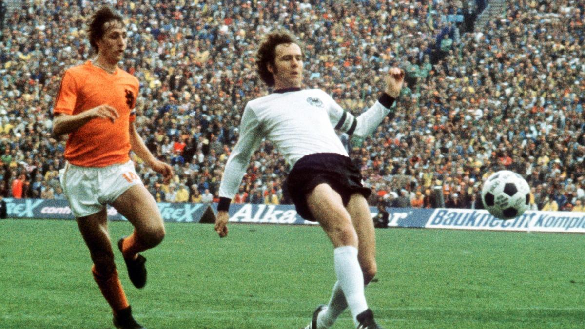
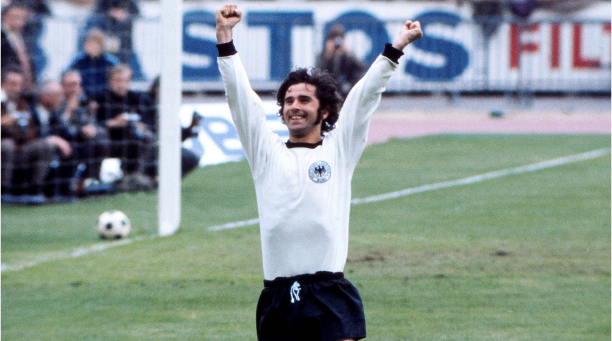
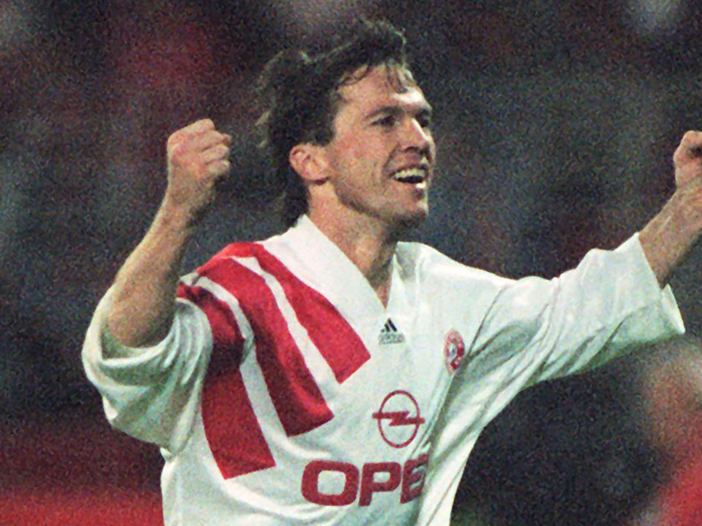
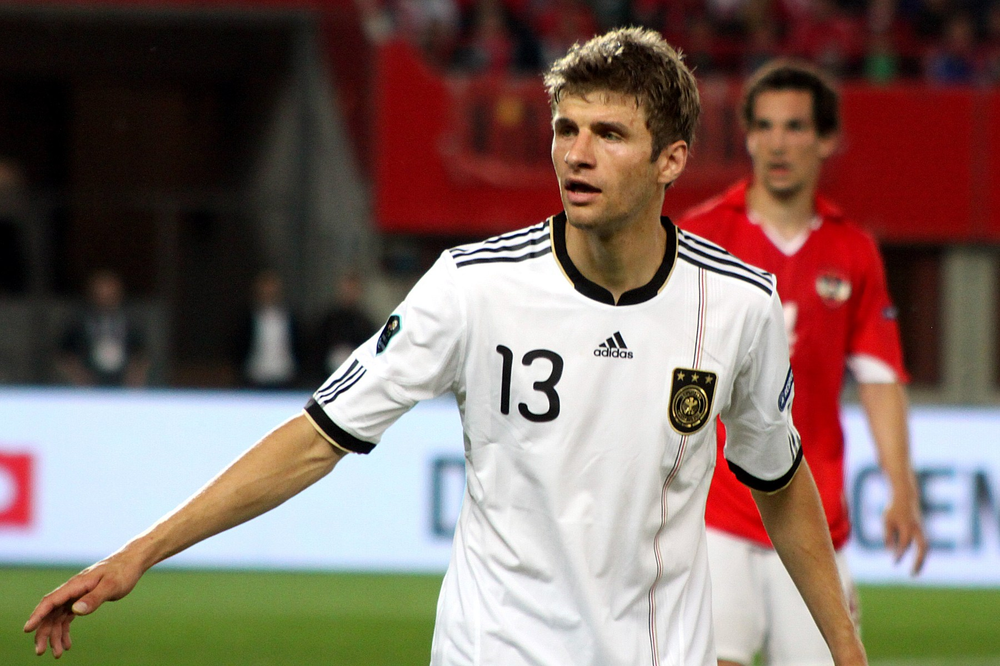
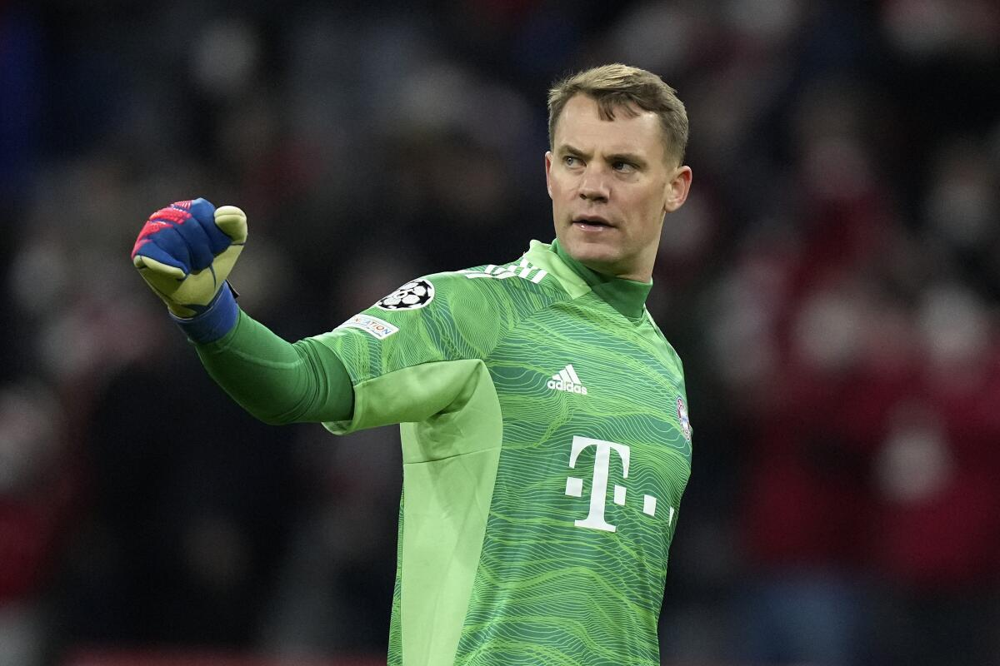
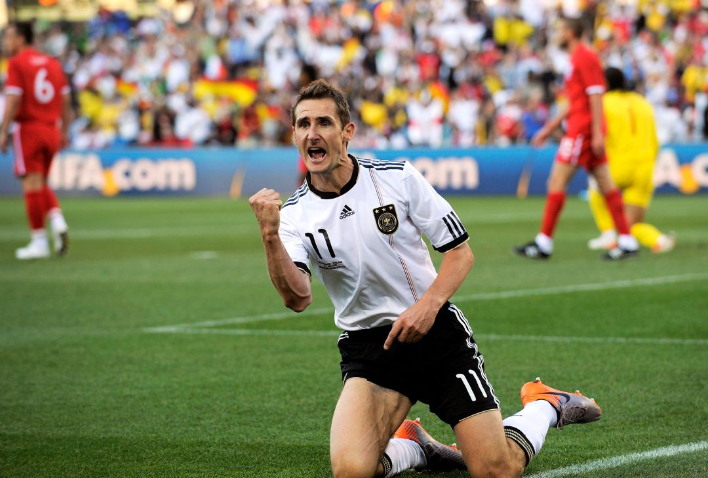
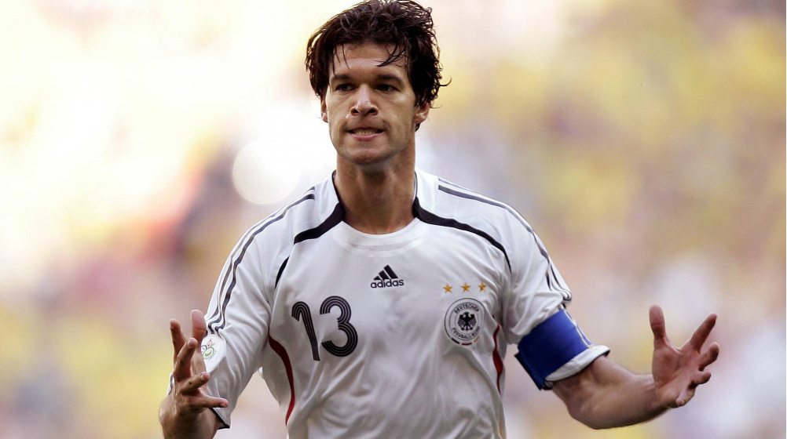
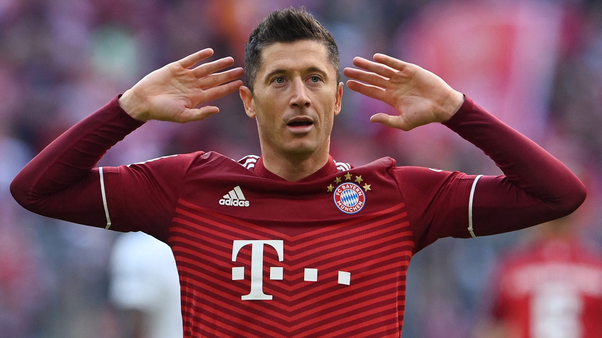

La Bundesliga es la máxima categoría del fútbol profesional en Alemania y
una de las ligas más importantes y seguidas en el mundo del fútbol. Aquí
tienes un resumen de su historia, actualidad y algunos de sus mejores
equipos.
Historia
La Bundesliga fue fundada en 1963 como parte de un esfuerzo para
modernizar y unificar el fútbol alemán. Antes de la creación de la
Bundesliga, el fútbol en Alemania estaba organizado en cinco ligas
regionales, lo que dificultaba la organización de un campeonato nacional
coherente y competitivo. La idea de crear una liga nacional surgió en la
década de 1950, pero se encontró con resistencia por parte de algunos
clubes y federaciones regionales. Sin embargo, en 1962, la Deutsche
Fußball-Bund (DFB), la federación de fútbol alemana, finalmente logró un
acuerdo para la creación de la Bundesliga. La Bundesliga se inauguró
oficialmente el 24 de agosto de 1963, con un partido entre el Werder
Bremen y el Borussia Dortmund. La liga comenzó con 16 equipos, que fueron
seleccionados en función de su desempeño en las ligas regionales y de
criterios económicos y de infraestructura. Desde su inicio, la Bundesliga
se ha convertido en una de las ligas más exitosas y seguidas del mundo. Ha
producido algunos de los momentos más memorables en la historia del
fútbol, con jugadores y equipos legendarios que han dejado una marca
indeleble en el deporte. A lo largo de los años, la Bundesliga ha
experimentado varios cambios en su formato y estructura, pero su
compromiso con la excelencia deportiva y la pasión de los aficionados ha
permanecido constante. La liga se ha ganado una reputación por su
competitividad y su enfoque en el desarrollo de jóvenes talentos, lo que
ha contribuido a su éxito continuo tanto a nivel nacional como
internacional.
Formato y Equipos
La Bundesliga está compuesta por 18 equipos que compiten entre sí en un
sistema de todos contra todos, donde cada equipo juega 34 partidos durante
una temporada (17 partidos en casa y 17 fuera de casa). Al final de la
temporada, los dos equipos con menos puntos son relegados a la 2.
Bundesliga, mientras que los dos primeros equipos de la 2. Bundesliga y el
ganador de un playoff entre el tercero al sexto ascienden a la Bundesliga.
Actualidad
La Bundesliga sigue siendo una de las ligas más emocionantes y
competitivas de Europa. Es conocida por su estilo de juego físico y
táctico, así como por la pasión y el apoyo de sus aficionados. Los clubes
de la Bundesliga también han sido líderes en términos de desarrollo de
jóvenes talentos y promoción de jugadores locales.
Mejores equipos de la Bundesliga
Bayern Munich: El Bayern de Múnich, oficialmente
llamado Fußball-Club Bayern München e.V., es uno de los clubes de
fútbol más exitosos y reconocidos del mundo, con sede en Múnich,
Alemania. Fundado el 27 de febrero de 1900, el club juega en la
Bundesliga, la máxima categoría del fútbol alemán, y disputa sus
partidos en el Allianz Arena desde 2005.
Bayer 04 Leverkusen: El Bayer 04 Leverkusen, conocido
comúnmente como Bayer Leverkusen, es un club de fútbol con sede en
Leverkusen, Alemania. Fundado el 1 de julio de 1904, el club compite
en la Bundesliga, la máxima categoría del fútbol alemán, y juega sus
partidos como local en el BayArena.
Borussia Dortmund: El Borussia Dortmund es un club de
fútbol con sede en Dortmund, Alemania. Fundado el 19 de diciembre de
1909, es uno de los clubes más emblemáticos del país y compite en la
Bundesliga, la máxima categoría del fútbol alemán. El Borussia
Dortmund juega sus partidos como local en el Signal Iduna Park, uno de
los estadios más grandes de Europa.
RB Leipzig: El RasenBallsport Leipzig, conocido
comúnmente como RB Leipzig, es un club de fútbol con sede en Leipzig,
Alemania. Fue fundado el 19 de mayo de 2009, lo que lo convierte en
uno de los clubes más jóvenes en la Bundesliga alemana. El RB Leipzig
ha tenido un ascenso meteórico en el fútbol alemán, pasando de las
ligas regionales a la máxima categoría en un corto período de tiempo.
Aunque relativamente nuevo, el club ha logrado establecerse como un
competidor fuerte en la Bundesliga y en competiciones europeas.
Borussia Mönchengladbach: El Borussia VfL 1900
Mönchengladbach e.V., más conocido como Borussia Mönchengladbach o
simplemente Gladbach, es un club de fútbol alemán con sede en
Mönchengladbach, Renania del Norte-Westfalia. Aunque lleva tiempo que
no compite por ganar la bundesliga, siempre intenta conseguir una
plaza para jugar competiciones europeas.
Mejores jugadores que han pasado por la Bundesliga
Franz Beckenbauer: Considerado uno de los mejores
defensores de todos los tiempos, ganó múltiples títulos de Bundesliga
con el Bayern de Múnich en los años 70.

Gerd Müller: Conocido como "Der Bomber", Müller es
uno de los máximos goleadores de la historia de la Bundesliga,
anotando una cantidad impresionante de goles para el Bayern Múnich.

Lothar Matthäus: Un versátil centrocampista que jugó
en varios clubes de la Bundesliga, incluido el Bayern de Múnich, y es
uno de los jugadores más emblemáticos de la selección alemana.

Thomas Müller: Müller ha ganado numerosos premios
individuales y es considerado uno de los mejores jugadores alemanes de
su generación. Su estilo de juego único y su capacidad para marcar
goles importantes lo han convertido en un ícono tanto para el Bayern
de Múnich como para la selección alemana.

Manuel Neuer: Neuer es conocido por su estilo de
juego único y su habilidad para actuar como un "portero-líbero",
saliendo de su área para interceptar pases largos y cortar jugadas de
ataque rival. Esto ha cambiado la percepción de lo que se espera de un
portero y ha influido en la forma en que muchos equipos abordan la
posición.

Miroslav Klose: Klose es conocido principalmente por
su destacada carrera internacional con la selección de fútbol de
Alemania. Jugó en cuatro Copas Mundiales de la FIFA (2002, 2006, 2010
y 2014), convirtiéndose en el máximo goleador de todos los tiempos en
la historia del torneo con 16 goles, récord que compartió con Ronaldo
Nazário hasta que este fue superado por Miroslav Klose en la Copa
Mundial de la FIFA 2014.

Michael Ballack: Un talentoso centrocampista que dejó
su marca en la Bundesliga con el Bayer Leverkusen y el Bayern de
Múnich antes de tener una exitosa carrera en clubes en el extranjero y
con la selección alemana.

Robert Lewandowski: Lewandowski es conocido por su
capacidad para marcar goles con ambos pies, su habilidad en el juego
aéreo y su inteligencia táctica en el campo. Es ampliamente
considerado como uno de los mejores delanteros de su generación y ha
ganado numerosos premios individuales a lo largo de su carrera,
incluido el premio FIFA The Best al Mejor Jugador Masculino en 2020.
